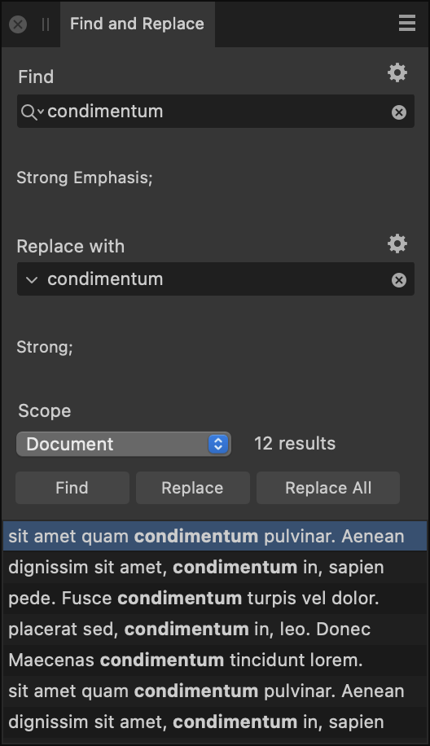

On the Find and Replace panel, you can specify items to search for and optionally include a replacement.

The following settings are available on the Find and Replace panel:
- Find—Specify the item you would like to search for.
- Select the magnifying glass icon to choose special characters to include in the search. The most recently used search terms are also listed here, and can be cleared by selecting Clear Recent Finds.
 Select the cross to instantly clear the text from the box.
Select the cross to instantly clear the text from the box.
- Replace with—Specify the intended replacement (if any) for the item you are searching for.
- Select the downward-pointing arrow to select special characters to include in the replacement term. The most recently used replacement terms are also listed here, and can be cleared by selecting Clear Recent Replaces.
- Select the cross to instantly clear the text from the box.
 You can further refine your search or replacement behavior by selecting Formatting and then selecting additional options from any of the following:
You can further refine your search or replacement behavior by selecting Formatting and then selecting additional options from any of the following:- Format—Select to display a dialog on which to specify the formatting you wish to find in the selected scope.
- Character Style—Select the character style you wish to find in the selected scope.
- Paragraph Style—Select the paragraph style you wish to find in the selected scope.
- Reset Format—Select to clear any formatting settings you have selected.
- Match Case—Select to only display search results matching the case of what you've specified in the Find box.
- Match Whole Word Only—Select this option to exclude results that do not match the whole word from the search.
- Scope—Select how extensively Affinity will search for the specified item: Document, Section, Spread, Page, Story or Selection. A selection can be a text range or one or more text objects.